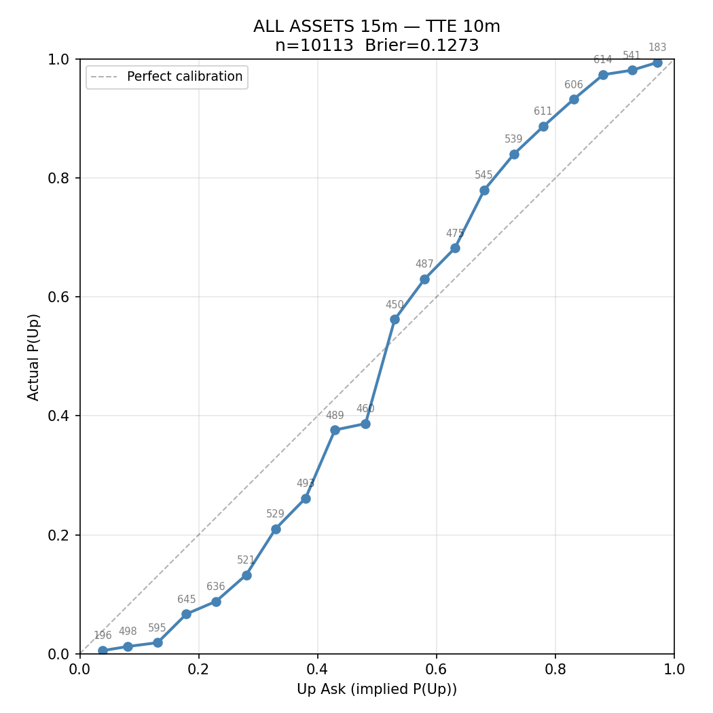
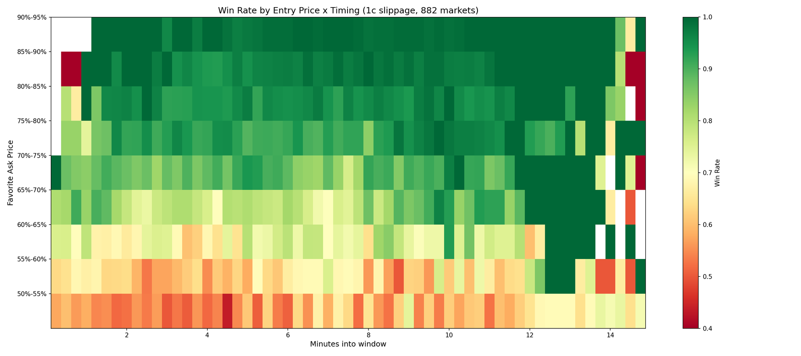
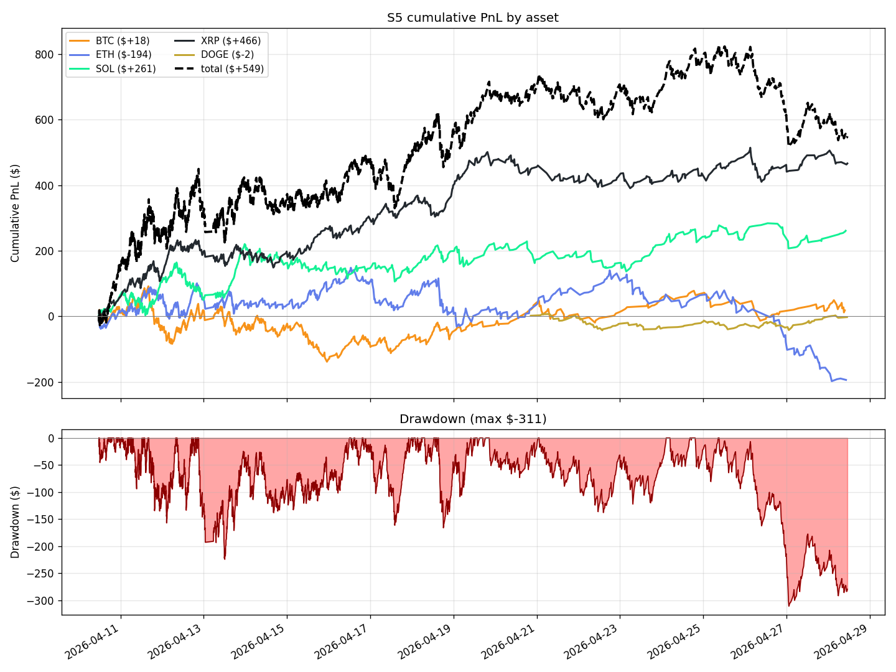
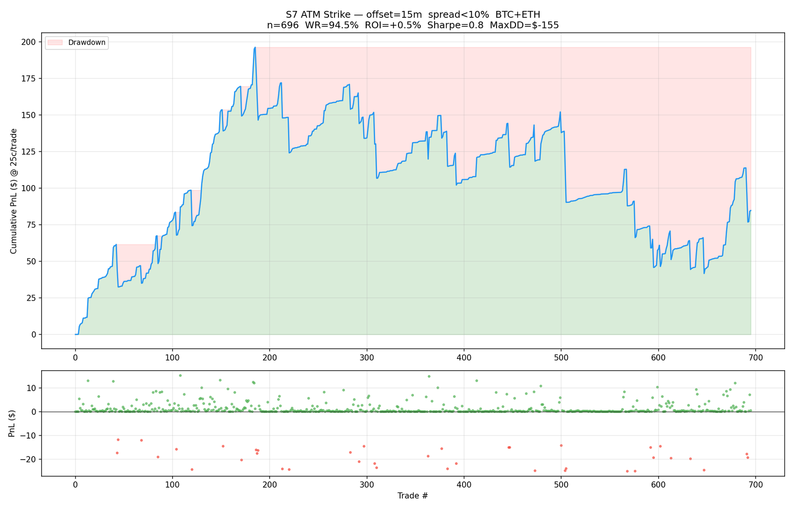
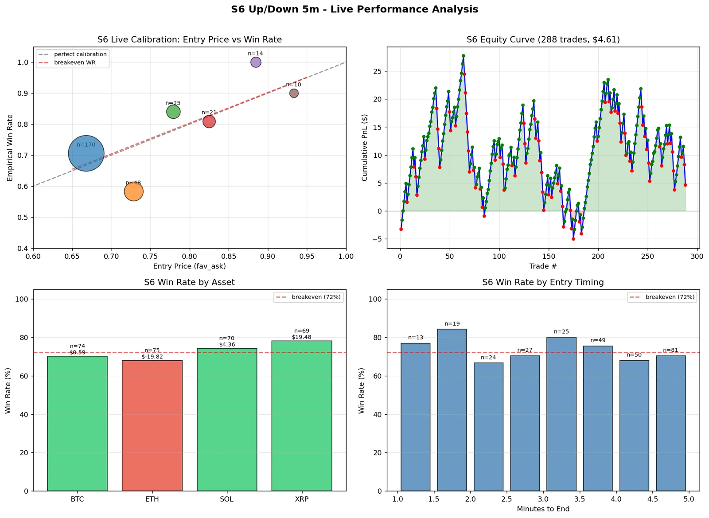
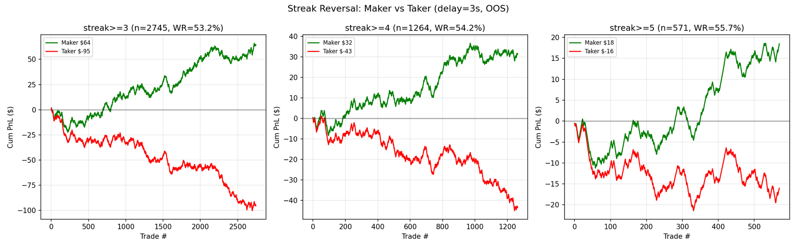

Work · trading · 24 min read
A live trading system on Polymarket
I built this with a collaborator. We ran it on personal capital from December 2025 to June 2026, then wound it down to make room for research. If you only read one section, read the two postmortems.
Seven months in one chart
The wallet is public, so the whole run is one line. It's the exchange's own mark, it covers everything the account did, and it's the honest summary of the project: up to +$612 in six weeks, back to break-even by the middle of February, down to −$182 in April, and +$155 when I took the snapshot in September.
The number I'd put next to it is the volume. The account traded $259,999 across 6,213 markets to end $155 up. That's about six basis points of the money we pushed through the exchange, on a book that was never more than a few thousand dollars at a time and turned over several hundred times. It's the right way to read everything below: the edges here are real and they're thin, and most of the work went into finding out which ones survived contact with a fee schedule.
Four things happened in that line, and the rest of the page is about them.
- Late December to late January. A cross-venue matcher that paired equivalent markets across exchanges with sentence embeddings and a language model, then bought both sides when they disagreed. First trade on 2 January.
- Late January to late March. A fair value for daily BTC and ETH markets built from Deribit's options chain. This is the run-up to +$612 and most of the giveback. It's the section below.
- Late March to June. A hub-and-worker rewrite, three strategies on multi-outcome markets for eleven days, then the 15-minute crypto markets and the favourite-press family. The April trough and recovery.
- June. A second rewrite, production-only, and three pilot days of a daily market maker before I halted it.
Generation one: pricing Polymarket off Deribit
The first real strategy came from an assumption that sounds obvious. Polymarket lists "Will the price of Bitcoin be above $80,000 on 4 February?" and settles it at 17:00 UTC. Deribit runs a liquid options market on the same underlying, priced by people who do this professionally. If Deribit knows the distribution of BTC tomorrow and Polymarket doesn't, the gap between them is the trade.
Deribit does know it, in a well-defined sense. Breeden-Litzenberger (1978) says the risk-neutral density is the second derivative of the call price with respect to strike, so a full options chain contains the market's entire distribution of where the price lands. Reading P(BTC > $80,000) off that chain is an operation, not a guess. We built the machinery for it:
- Black-76 for the vanilla prices, on the forward rather than spot, because crypto futures pay no dividend.
- An SVI smile (Gatheral 2004) fitted per expiry by least squares in total-variance space, with a monotone PCHIP interpolation as the fallback when a slice had fewer than five strikes.
- Total-variance interpolation across expiries rather than interpolating volatility, which keeps calendar spreads arbitrage-free.
- Forward and basis interpolation to bridge the settlement gap. Deribit expires at 08:00 UTC and Polymarket settles at 17:00, so nothing lines up by default.
- Breeden-Litzenberger on the bracketing strikes for the probability itself, with N(d2) on the fitted surface as the fallback.
- A d2-space adjustment to get from risk-neutral to real-world: a funding-drift term from Girsanov, the variance risk premium, a risk reversal, a Cornish-Fisher correction for the skewness gap, and a term-structure signal.
- Quarter-Kelly sizing, a delta budget of $25 of exposure per 1% move per asset, and a scorer that ranked buys and sells on one scale with delta as an explicit term.
The pricing engine started on 20 January and was placing live orders by the 23rd. It traded until we retired it in late March. Across the first generation's whole run, from late December to 23 March, the account made 3,939 trades on 994 crypto markets and won 62.4% of the ones that settled.
Why it didn't work
The premise was half right. Polymarket is less efficient than Deribit, but not by much, and every step of the pipeline above adds an error that's the same size as the edge we were looking for. Three of them mattered.
The chain isn't dense enough where the markets are. Deribit's daily options only carry strikes within roughly ±12% of spot. Polymarket lists "above $80,000" when spot is $70,000, and there's no bracketing pair at the daily expiry, so you either skip the market or reach for a different one. We tried reaching. Pricing a one-day settlement with a weekly option 3.8 days out pulls every probability toward 50%, because the distribution at the later expiry is wider. At 60% crypto volatility that's a 10 to 15 percentage-point error on any strike that isn't at the money. I widened the expiry tolerance to fill those gaps on 23 March and reverted it the same day.
The quotes are widest exactly where we needed them. Across 853 Deribit calls sampled on 23 March, the mark price and the bid-ask midpoint differed by 1.97% on average, and the median bid-ask spread was 4.88%. On the options with less than a day to expiry, which are the ones a daily Polymarket market actually needs, the mean spread was 21.1%. Deep out-of-the-money strikes had a median spread of 9.5%. So the input to a two-decimal probability was a price with a two-figure percentage uncertainty on it.
The bigger the disagreement, the more likely we were the wrong one. This was the finding that ended the strategy. If you sort the trades by how far the model's probability sat from the market price, accuracy is a hump. Trades where the two agreed to within 5 points had nothing to trade. Trades in the 10 to 20 point band settled at about 74%, close to what the model claimed. Above 20 points, where the model was shouting, the trades settled at 58 to 61% while the model was claiming 94% or more. The strategy sized on model confidence, so it put the most money into the trades it was worst at.
The Q-to-P machinery turned out to be decoration. The mean adjustment it applied to the raw probability was +0.0001, because Breeden-Litzenberger on a sparse chain already returns values clustered against 0 and 1, and a few points of variance-risk-premium correction can't move a number that's sitting at 0.99. Of 888 high-confidence trades, 886 were already above 90% before any adjustment ran. The model also had a side problem: the 672 high-confidence NO trades settled at 83.0%, and the 216 YES trades at 60.6%, which is what you'd expect if the risk-neutral measure is overstating upside and nothing is correcting it.
The verdict I'd write now is that the model picks the correct side 64.3% of the time and overpays for it. That's a real signal and it isn't a tradeable one, because the interpolation across strikes and maturities that makes the number computable at all introduces an error of the same order as the mispricing it's trying to find.
Delta, vega and the hedge we never built
We managed the greeks and never hedged them. The scorer carried a delta budget and gave every buy and sell a delta term, so the book drifted back toward flat on its own, and by March we'd got noticeably better at not letting one direction accumulate. What the scorer can't do is hedge. A real hedge means shorting perpetuals on a second venue against the binary book, which is another exchange, another set of keys, another margin account and a funding cost against a book worth a few thousand dollars. We never tried it properly. It was a big enough build that it kept losing to whatever was in front of us.
So the book carried whatever delta the model handed it, and the wallet shows it. Single days moved by $100 to $300 on an open cost basis of a few thousand: −$119 on 27 January, +$299 three days later, +$116 on 7 February and −$179 the day after. The range markets were the clearest case. Buying "between $68,000 and $70,000" is a short-volatility position however you label it, and the between direction was the only one that lost money over the whole run (−$111 settled, against +$655 on the directional above markets). We removed it from production on 23 March.
The volatility story is the one part of this I remembered wrong, and the data is worth writing down. The run-up to +$612 happened while Deribit's BTC volatility index went from about 42 to 59, which is what a long-volatility book does when volatility shows up. The decay isn't the mirror image. From 7 February to the end of March the index averaged 54, above the 43 it averaged during the run-up, so the book gave its gains back while volatility stayed high. Volatility didn't fall until April and May (44, then 38), by which point the strategy had already been retired. Whatever cost us the second half, it wasn't volatility collapsing. On the evidence above it was the pricing error, arriving in size because the sizing rule was reading that error as confidence.
Generation two: the 15-minute markets
Polymarket lists a binary market every fifteen minutes for each of BTC, ETH, SOL and XRP, on whether the price will be up or down at settlement. Each contract pays $1 or $0. Up and Down have separate order books, so the two asks don't have to sum to one. And because a market settles every 15 minutes, a strategy settles a few hundred times a day. That volume is the appeal. A hypothesis gets answered in days instead of quarters, which is the opposite of the daily markets above, where a bad assumption took six weeks to show up.
The edge we spent most of our time on is the oldest one in binary markets. Ten minutes before settlement, across 10,113 collected markets, the side priced near 0.80 wins about 90% of the time and the side priced near 0.20 wins about 8%. So favourites are underpriced and longshots are overpriced.

We researched six strategy families on these markets. S5 and S6 have live records, S4 and S8 traded briefly, and S1 and S7 never traded. Backtest numbers are labelled as backtests. The Sharpe figures aren't computed the same way as each other and none of them are fund-style numbers: the S7 pair is annualised from daily-summed backtest P&L on days a trade settled, the S4 figure from weekly portfolio returns over about 31 weeks, and the sizing figures further down are per-trade ratios on binary payoffs.
-
S5Favourite press traded live
- Idea
- Buy the higher-priced side of a 15-minute market 5 to 15 minutes before settlement, when its ask is between 0.65 and 0.95 and the two asks sum to less than 1.15. Hold to settlement.
- Evidence
- Live, 10 to 28 April: 3,037 trades, 78.0% win rate, +$383 verified on-chain, +0.80% per rolled dollar.
- Outcome
- Traded live. It's the only strategy with a verified live profit.
-
S5On 5-minute markets killed live
- Idea
- The same rule on the 5-minute cadence.
- Evidence
- Live: 216 trades, 71.3% win rate, −$494. The backtests had been positive.
- Outcome
- We disabled it. Postmortem 2.
-
S6Machine-learned gate flat live
- Idea
- Take S5 signals only when a LightGBM model's expected value clears 5%. The model uses 102 features from the order book, its trajectory, Binance candles and on-chain flow.
- Evidence
- Walk-forward backtest: 81.0% win rate. Live on 5-minute markets: 288 trades, +$4.61.
- Outcome
- Flat live. We moved it to 15-minute markets and dropped XRP for miscalibration.
-
S1Streak reversal researched
- Idea
- After three to five same-direction outcomes in a row, the next 5-minute market reverses 53 to 57% of the time, while the opening prices stay near 50/50. Executed with post-only maker orders.
- Evidence
- Out-of-sample backtest: 2,745 trades, 53.2% win rate, +$64. The same trades executed as a taker lose $95.
- Outcome
- Researched only. The edge is smaller than the taker fee, so it's maker-only or nothing.
-
S4Model-priced daily markets backtest
- Idea
- The same daily above/below markets as generation one, priced with the Phantom forecaster's Student-t distribution instead of the options surface.
- Evidence
- Backtest only, August 2025 to March 2026: 1,118 trades, 67% win rate, weekly Sharpe 2.2, maximum drawdown −36% with delta-aware sizing.
- Outcome
- 21 live executions in April. There's no live result worth reporting.
-
S7At-the-money strike leak, never traded
- Idea
- Hourly "above $X" markets, entered 15 minutes before settlement at the strike nearest the spot price.
- Evidence
- Backtest Sharpe 9.5 with the leak, 0.85 without it.
- Outcome
- It never traded. Postmortem 1.
-
S84-hour favourite press added April
- Idea
- Favourite press on 4-hour markets with an order-book-imbalance filter (my collaborator's research).
- Evidence
- Backtest, October 2025 to April 2026: 754 trades, 91.8% win rate, +7.8% return on stake. The in-sample and out-of-sample splits agree.
- Outcome
- Added in April. No separate live tally survives.

The system
Generation one was a monolith: the cross-venue matcher, the Deribit-priced fair-value engine, a dashboard and an executor that could place live orders from 23 January. We retired it in March for a hub-and-worker design that ran until June.
- Hub. A FastAPI process that owns the strategy registry, the state aggregator, a WebSocket that broadcasts state to the dashboard once a second, and an IPC server. Persistence is SQLite in write-ahead mode, holding positions, executions, wallet snapshots and an activity log.
- Workers. One subprocess per strategy, talking to the hub over newline-delimited JSON on a local TCP socket, with a five-second heartbeat, a fifteen-second timeout and exponential-backoff restarts. A strategy that crashes restarts alone and the others keep trading.
- Dashboard. React and TypeScript, served behind Caddy. It shows P&L, win rate and inventory by strategy, a discovery view and the logs. About 6,700 lines.
- Research pipeline. Written as Claude Code skills, including an eight-step research procedure with two hard gates: no backtest before a statistical validation has passed, and no capacity estimate before the robustness checks have. We wrote the execution rules down once and enforced them everywhere. Buying means paying the ask. The Up and Down books are independent. Backtests never assume limit-order fills.
The production tree came to about 20,000 lines of Python and 6,700 of TypeScript, in a repository of 505 commits, running on a small cloud server. I wrote the large majority of it.
What happened live
The hub went live on 28 March with three strategies on a different market type, the negative-risk multi-outcome markets: a dispersion trade on the constraint that the outcome prices have to sum to one, an Avellaneda-Stoikov market maker with a regime switch on order-flow toxicity, and a tail-theta position. In eleven days the market maker lost $168.64 and the other two roughly broke even. We retired all three on 9 April when S5 and S6 replaced them. The dispersion signal itself was real, and mean-reverting with a half-life of 42 to 157 minutes across all eight events we tested, but it only paid on events with a clear favourite and only in the last month before settlement, which is a narrower opportunity than it first looked.
S5 traded from 9 April. An execution audit over its first eleven days (2,527 intended buys, 95.4% filled, median signal-to-fill latency 4.31 seconds) found that price slippage was slightly favourable, and that the realised win rate, 78.2% with a 95% interval of 76.5 to 79.8%, was significantly above the backtest's 75.6% (binomial z = 3.02). The implementation shortfall came from failed and partial fills. Prices weren't the problem. In the second half of April the dashboard's cumulative curve peaked near +$800 and gave back a third of it, almost all of it ETH, which lost $194 on the dashboard while XRP made $466 and SOL made $261.
The reconciliation in May also found that the dashboard had been counting partial fills that never completed. Against the on-chain record, S5's result from 10 to 28 April was +$383 on 3,037 trades, a 78.0% win rate and +0.80% per dollar rolled. The screen had said +$549. Slippage over all 3,037 trades summed to $3.

By May the exchange had migrated its order API and we spent the last engineering commits on fee accounting. The tuning memo written at that point recommended dropping ETH, tightening the sum-of-asks filter to 1.02 and trading only the 10 to 15 minute entry window. It also prescribed a two-week verification period before scaling. We didn't run that verification. The MSc, the internship and the research were taking the time, and the numbers showed a small, real, fragile edge on a small wallet, so we stopped.
Postmortem 1: fifteen minutes of look-ahead
In April we researched an hourly strategy. Fifteen minutes before settlement, find the "above $X" market whose strike sits nearest the spot price and trade its favourite. The first backtest came back with a 98.8% win rate, +8.3% return on stake and an annualised Sharpe of 9.5 on daily backtest P&L. Numbers like that are what made us look again.
The bug was one function argument. The helper that fetched the spot price to choose the strike was being called with the settlement time instead of the entry time. So the backtest picked its strike already knowing where the price would end up. Fifteen minutes of BTC drift is enough to turn a coin flip into a near-certainty.
With the entry-time price the strategy still wins 94.5% of its trades, because favourites near settlement usually do. But the losses are about fifteen times the size of the wins. Over 696 trades the corrected backtest makes $85 at 25 contracts a trade, a 0.52% return on stake, an annualised Sharpe of 0.85 on daily P&L and a $155 drawdown.

| Win rate | Return on stake | Sharpe | Trades | |
|---|---|---|---|---|
| Backtest with the settlement-time price (the leak) | 98.8% | +8.3% | 9.5 | not recorded |
| Backtest with the entry-time price | 94.5% | +0.52% | 0.85 | 696 |
Afterwards the S7 backtest was rewritten to read the spot price at the entry timestamp, and the postmortem in the repository overview records the rule in writing: verify that a backtest uses only information available at decision time. The research procedure written that week already required every signal to be computed only from data available at time T, and its go-live checklist has a no-look-ahead item. When a backtest looks like a money printer, the first thing to check is whether it can see the answer.
Postmortem 2: a live loss that killed a variant
S5 traded both the 15-minute and the 5-minute cadence from its first live day. The backtests were positive on both, with the 5-minute edge the thinner of the two. Live, the 5-minute variant won 71.3% of 216 trades and lost $494. Those two facts are compatible. At the 0.65 to 0.95 entries the strategy takes, a 71% win rate is below break-even for anything bought above 0.71.
The diagnosis in the repository was a price-band problem. The 0.68 to 0.83 entry band that backtested well on 5-minute markets ran below break-even live, and the fills themselves were clean (orders filled at the quoted ask with median slippage of zero). So the backtest was wrong and the execution wasn't.
We didn't tune it. We cut the 5-minute markets entirely, raised the minimum entry price from 0.55 to 0.65, removed a "dead zone" exclusion the backtest had suggested and reduced the bet size from 25 to 10 contracts while the 15-minute variant proved itself. The machine-learned gate, which had been flat on the 5-minute markets (288 trades, +$4.61), moved to the 15-minute cadence for the same reason.
The rule we kept from this: a live result that diverges from its backtest tells you something about the backtest, so we stop rather than average it in.

Smaller things we learned
- Execution is the strategy. Polymarket charged a 7.2% taker fee on these crypto markets. Every configuration of the streak-reversal strategy is profitable as a maker and loses as a taker on the same trades.
- Sizing isn't edge. In a walk-forward study of the favourite-press gates (8,726 markets, 60/40 split), half-Kelly sizing multiplied both profit and drawdown by 2.5 and left the per-trade Sharpe unchanged at 0.38. Rule-based size tilts made it worse (0.34). The production filter on its own lifted it from 0.27 to 0.38, and a logistic expected-value gate reached 0.41 with a third fewer trades.
- The edge sat in one bucket. In the 18-day live sample, trades where the two asks summed to between 1.00 and 1.02 made $521 (n = 2,070, z = 2.39). Every wider-spread bucket lost. Entries 10 to 15 minutes before settlement made money and entries 5 to 10 minutes before didn't.
- Within-window moves matter in a barbell. Over 2,346 paper trades, the favourite's edge over break-even was +3.0 points when the underlying had barely moved since the window opened, +0.1 when it had moved 5 to 10 basis points, and +5.9 when it had moved more than 20.
- The options fair value came back a second time, and lost again. A June memo priced daily and 4-hour markets off Deribit at-the-money implied volatility, with pre-registered gates, over 1,304 markets. On daily "above" ladders the model was statistically indistinguishable from the market mid (Brier difference −0.0012, with an interval containing zero). On 4-hour markets the market was clearly better. Its one positive was a NO-side edge on 71 to 108 trades, which the memo itself flagged as a launch-window effect.

Afterwards: the June rewrite
In June I rebuilt the trading infrastructure from scratch, on my own, as a production-only system. It has no research code and none of the old strategies were ported. The design goal was a system that couldn't do the things that had cost us money or sleep. Git shows 64 commits and 22,770 lines of Python in the first 53 hours, and 77 commits and 24,076 lines of Python (8,599 of them tests, 381 test functions) after about 100 hours across five days. Every commit carries a Claude Code co-author trailer. The speed came from Claude Code, and the architecture is mine.
- One chokepoint. Strategies are separate operating-system processes that never import the exchange client, never hold a key and never open a socket. They publish order intents to a durable Redis stream. A single order-gateway process consumes them, runs the risk checks, signs, posts, persists to Postgres and only then acknowledges the stream entry, so a crash replays the entry instead of losing it.
- Eleven ordered pre-trade checks. Kill switch and trading-enabled flag, connectivity, market status, allow-list, order validity, price collar, per-strategy limits, firm-wide limits, daily loss limits, rate guard, self-trade prevention. Any exception inside a check rejects the order, so the pipeline fails closed.
- Four independent gates. The strategy's service unit, a quoting flag in its config, the gateway's dry-run default and a trading-enabled flag in Redis must all be opened, each one separately, before an order can reach the venue. The dashboard is read-only by design. Halting is a control-plane action.
- Live and simulated share one interface. The backtest engine replays recorded market data through the same strategy context as production. One bug I found this way was that cancels silently failed in simulation, so any quote-and-requote strategy would have shown "fantasy" maker fills. I fixed it with a regression test on 16 June.
The first strategy was a two-sided maker on the noon daily BTC and ETH markets, which is the same market generation one had traded and a different way of standing in it. The research behind it found that a fair value from the Deribit volatility surface does beat the market's own Brier score (0.0631 versus 0.0643 on 2.9 million observations across 7,402 markets). It also found that centring quotes on that fair value hurts in every simulated configuration, down to a 5% weight. That pair of results is the whole lesson from generation one, measured properly: the surface knows something, and it isn't accurate enough to price against. So the maker quotes around the book mid, the model stays out of it entirely, and risk is handled by inventory caps. It went live at ten shares a quote with a $50 daily loss cap.
The pilot ran for three days and each one turned up a problem:
- 15 June. The maker re-quoted at about 290 orders a minute with zero fills and built a backlog the gateway couldn't drain. I fixed it with an absolute re-quote threshold and one order per leg, and the order rate fell to about three a minute.
- 16 June. It accumulated one leg in a trend. I fixed that with an inventory-reduction path and a cost-to-complete gate that, replayed over that day's 7.2 million recorded events, moved the mark-to-market from −$3.51 to +$10.81 in simulation.
- 17 June. It lost $9.24 to sub-tick order rejects near settlement and to quoting markets that were already decided. I fixed that by clamping the tick grid and narrowing the quote band to 0.20 to 0.80.
Then I halted it. The simulation's six-month estimate depends on a queue-position parameter I can't observe, so I don't quote it.
What I would do differently
- Test the premise before building the machinery. Generation one took two months of options mathematics to reach a question we could have answered in a week: how far is the model's probability from the market's, and is the model more right when the gap is wide? The answer was no, and it was available from the first thousand settled markets.
- Keep one consolidated ledger from the first trade. The whole-run P&L of the system can only be rebuilt from the exchange, because the research databases, the dashboard tables and the audit scripts each covered part of the period.
- Reconcile against on-chain fills every day instead of at month end. The phantom-fill bug hid for three weeks.
- Size on the market's price and not on the model's confidence. The trades where the two disagreed most are the ones where the model was worst, and Kelly on a model probability puts the most capital exactly there.
- Start with the fail-closed gateway. The June architecture is what the March system should have been. We built the March system to answer a research question fast, and it did.
- Write the stop rule down before going live. We stopped for good reasons, but the tuning memo's two-week verification was the right experiment and it never ran.
Credits
This was a joint project. I wrote most of the research code and most of the production system. My collaborator led two of the strategies, the fill reconciliation and the exchange-API migration. A third contributor worked on the first-generation monitoring pipeline in January. The June rewrite was mine alone. The research procedure and most of the code were written with Claude Code.